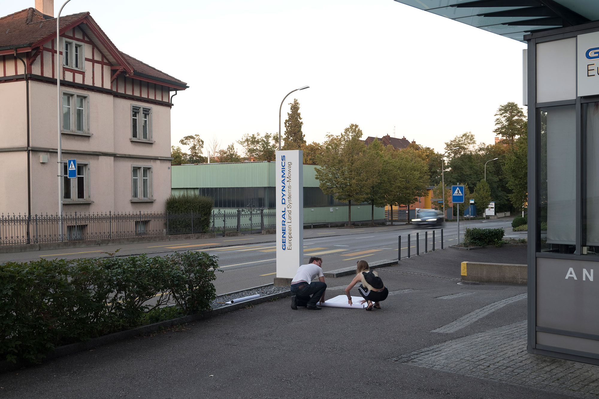
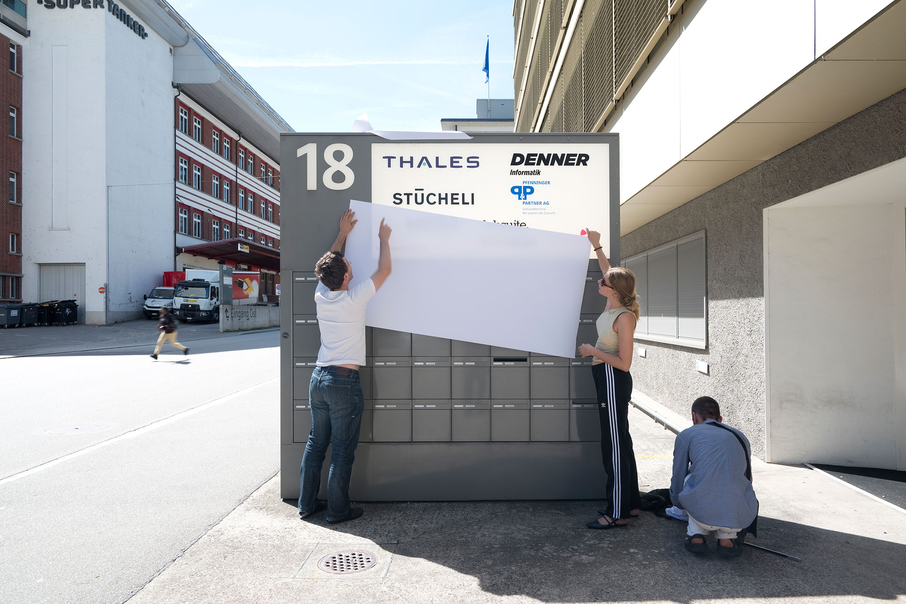
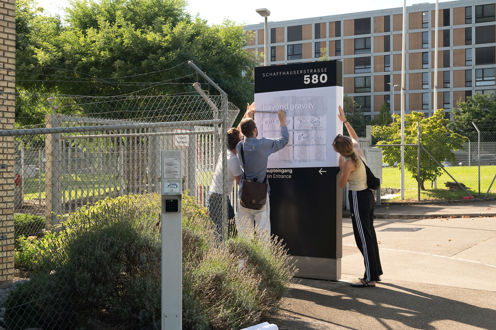
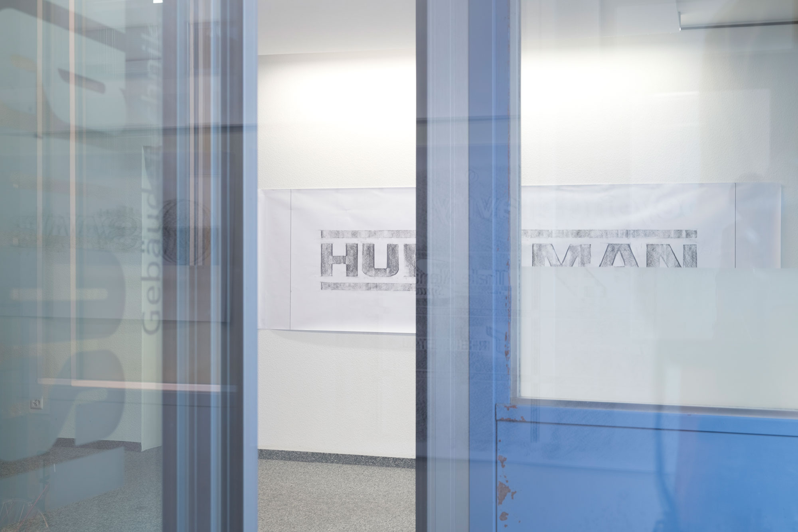
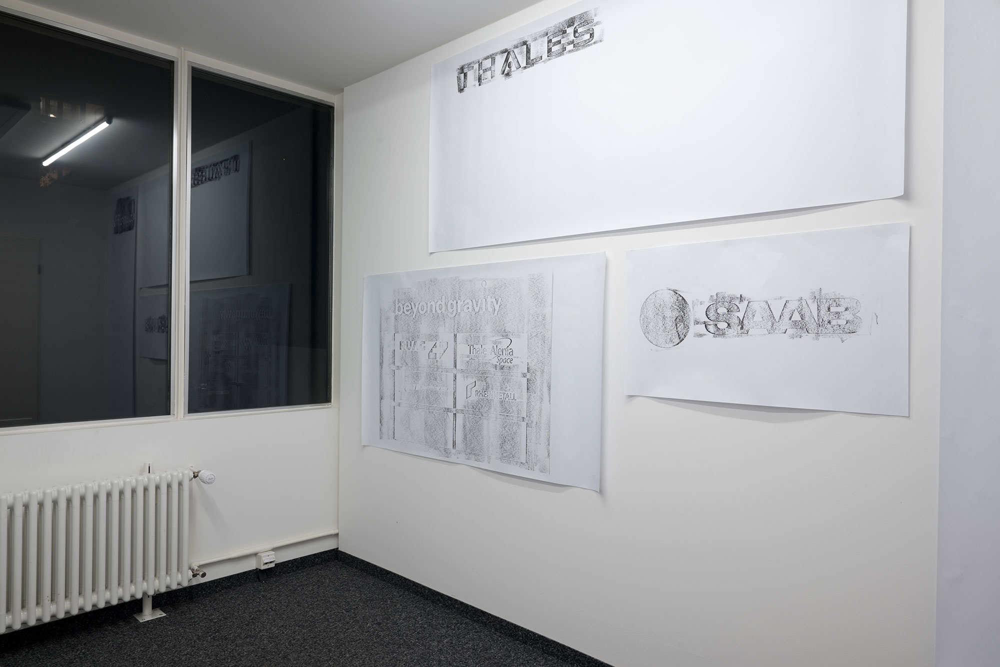
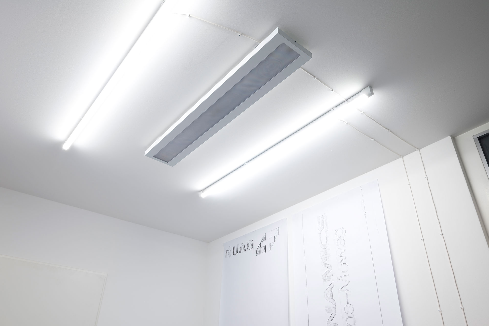
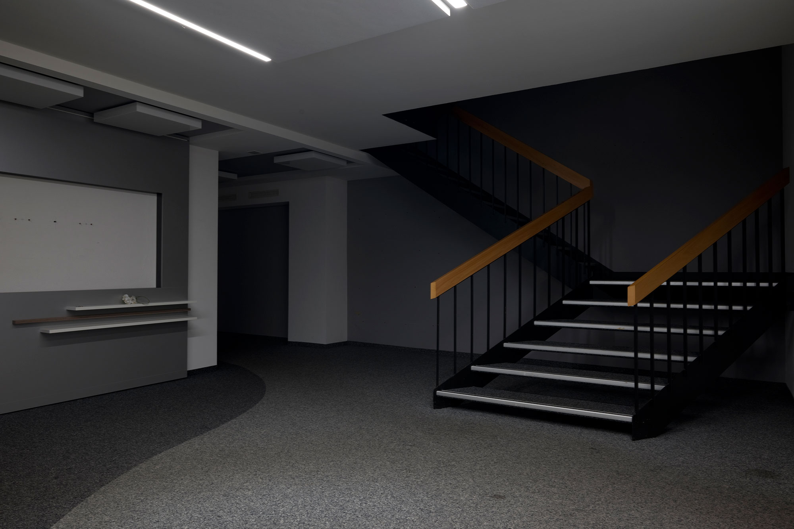
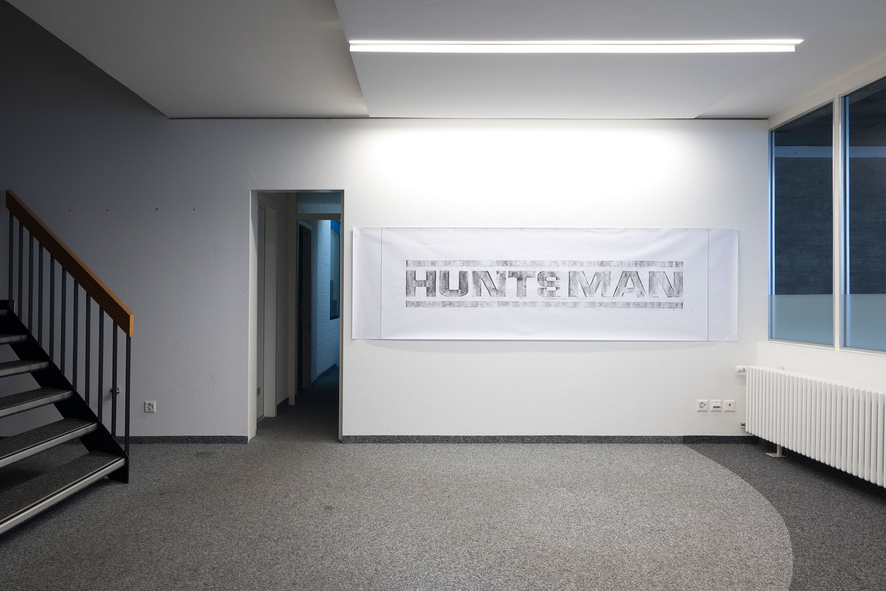
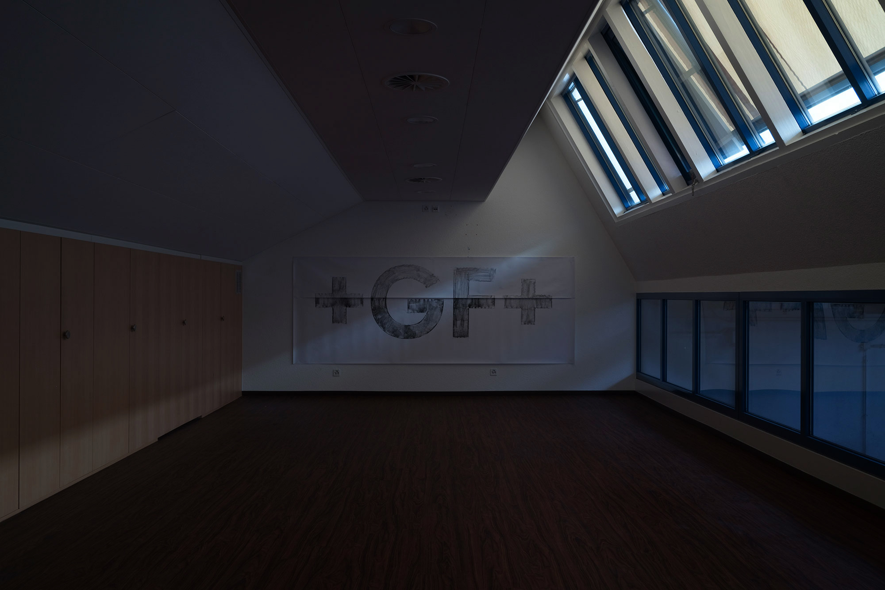

Sell Us Your Liberty or We'll Subcontract Your Death is a 2008 series of
large-format lumber crayon rubbings of architectural signage of Northern California-based
entities engaged in the everyday production of war. The title comes from a pseudonymous comment
left on Wired's Threat Level blog.
The rubbings document the sites of entities in the Bay Area involved in
activities including militaryindustrial development and production, illegal surveillance, remote sensing, and
war profiteering. Many of these organizations are located in business parks.
This activity was inspired by AT&T technician Mark Klein's
whistleblowing on the collusion between AT&T and the NSA in warrantless domestic internet surveillance via data
duplication and redirection, in a secret room at 611 Folsom Street in San Francisco.
Sell Us Your Liberty or We'll Subcontract Your Death (2023) similarly
surveys the architectural signage of companies in Switzerland that produce war materiel (war
equipment and physical supplies), dual-use technology, and intellectual property for domestic
military use and export under the policy of armed neutrality. These include Swiss companies and
subsidiaries of international defense companies. In 2020, Switzerland exported war matériel to 60
countries.
As in the US, the white-collar and production backend of Swiss war
production operates–to a degree–in plain sight, advertising wares, capacities, and business
locations on rich websites and via “monument” signs fronting HQs and satellite production sites. While
dwarfed by the US' defense industry, which sells 40% of war materials globally, in 2022 Switzerland exported $1 billion
USD in war materiel and weapons.
In 2023, the Swiss weapons industry operates in the geopolitical context
of Russia's war in Ukraine, Switzerland signaling the intention to join the European Sky
Shield Initiative joint air defense system, and increasing arms exports to Qatar and the Middle
East, all set against the question of the future of permanent armed neutrality.
Amy Balkin is an San Francisco based artist whose works propose
alternatives for conceiving the public domain outside current legal and discursive systems, addressing
property relations, environmental justice, and equity in the context of climate change.
Courtney Jaeger defines themselves as an exhibition space with changing
physical locations. For the first exhibition they are delighted to open our office at
Dornacherstrasse 270, the former premises of Tschantré in Gundeldingen. The show is curated by their dear friends Hagen Eberle and Matthias
Holznagel, so-called „Fondation Tschuess“.
In collaboration with Amy Balkin, the Sell Us
(2023) rubbings were acquired by Fondation Tschuess and Courtney Jaeger from publicly accessible signs
across Switzerland.